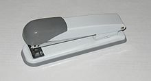

Вам всем пипец от степлеров
Первый известный сшиватель был ручной работы. Изготовлен в XVIII столетии во Франции для короля Людовика XV. Каждая скоба была помечена знаком отличия королевского двора. Растущее использование бумаги в XIX столетии создало запрос на эффективное устройство для соединения листов бумаги. В [[1866 год]]у Джордж Макгилл получил патент на приспособление для скрепления латунных листов, которое было предтечей современной скобы для сшивателя. В [[1867 год]]у он получил патент на пресс, позволяющий скреплять вышеупомянутыми приспособлениями листы бумаги.